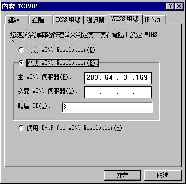
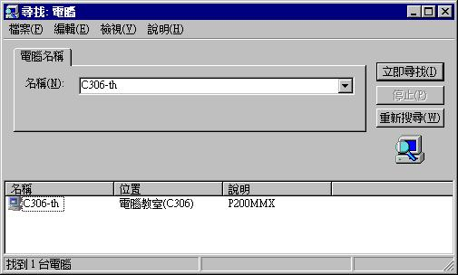

§ FTP 與 網路芳鄰之補充
FTP: 遵從 TCP/IP 網路標準, 用於工作站與工作站、工作站與PC、 工作站與MAC之間之檔案傳輸
網路芳鄰: Microsoft 公司所發展的, 用於PC與PC之間
網路芳鄰有關之設定
(1) 選 "控制台" �堛� "網路"
(2) 在 "組態" 中，選 TCP/IP
(3) 按 "內容", 選 "Wins組態"

(4) 選 "進階", 勾選 "將這個通訊協定設成預設的通訊協定"
如何使用網路芳鄰
(1) 直接按 Desktop 中的 "網路上的芳鄰", 再選 "整個網路"
(2) 按 "開始", 選 "尋找" 中的 "電腦"

在家中如何透過 PPP 及 網路芳鄰傳檔案到某部 PC
(0) 需先在 Windows 或 Win95 的目錄下建一個檔案叫 lmhosts, 內容為
203.64.6.119 C306-share 203.64.6.140 C306-th
(1) 撥通 PPP
(2) 按 "開始", 選 "尋找" 中的 "電腦"
(3) 直接對檔案作 copy / paste